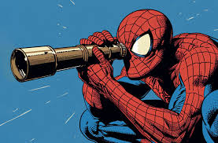
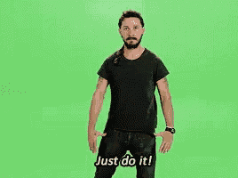

Goals
I’m Benji, and this is what I’m looking for.
 |
|---|
| Looking for new horizons |
I’m a Product Manager
I’m into these industries: Health, Social Impact, Music
The goal of this page is to help others understand what I offer, uncover opportunities I haven’t considered, and connect with people in the industry.
Job Hunting: Candidate-Market Fit [CMF]
I am seeking a Product Manager role at an early-stage startup Series A. I'm at my best at the intersection of design, customer experience (UX), and high-impact industries.
Favorite Industries
- Wellbeing: Meditation, Sleep, Longevity, Fitness.
- Social: Travel, Hospitality, Health, Ed Tech, Crypto.
- Media: Music, Gaming, Publishing, Blockchain.
Ideal Team & Product
- Vision: Product-informed cycles, not just sales-driven.
- AI Usage: Leveraging AI to solve problems, even if not user-facing.
- Must-have: Data-driven decision making.
| The path ahead |
Roadmap & Growth
Short-Term: Core Data Skills [6-12 Months]
Focus: Strengthening Al framing and impact with a data-driven mindset.
- AI Framing: Understanding AI impact. Action: See books and opinionated stance on /ai/.
- Data-Driven Decisions: Focusing on user segments, personas, and feature validation through customer pain points.
- Formal Training: Pursuing certifications at Scrum.org and attending industry conferences.
Mid-Term: Strategic Vision [2-3 Years]
Focus: Expanding impact and mastering macro-level market understanding.
- Innovation: Fostering creativity and understanding market trends and competitive landscapes.
- Impact: Leading workshops, hackathons, and participating in Product Hunt launches.
- Planning: Creating long-term product visions that align with company goals.
Long-Term: Culture & Leadership [5-10 Years]
Focus: Building from the ground up and mentoring the next generation.
- Leadership: Building and managing cross-functional teams to inspire innovation.
- Venture: Joining a startup as a co-founder or starting a new venture.
 |
|---|
| Sometimes you just do things |
Strengths (Gallup-Based)
- Philomath/Curious: I prefer ongoing questions over closed answers. “The mind is not a vessel to be filled, but a fire to be kindled.” — Plutarch
- Believer: High drive and persistent; I believe in people’s capabilities.
- Coach/Supportive: I push causes to happen. WAGMI (We’re All Gonna Make It).
- Self-Believer/Ownership: Confident in moving forward and encouraging others.
- Strategist: Focused on long-term positive impact and meticulous planning.
Dream Idea: Earthworms
Inspired by Pay It Forward (2000), I have been giving away vermicomposting-recycling for a decade. I am constantly exploring how to create a global chain reaction for environmental impact.